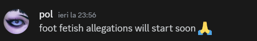

Docker de informații
Istoria membrilor din cadrul breslei orange, precum și detalii despre fiecare în parte.

Hei, hei!
Pagina aceasta este în curs de actualizare! Se așteaptă să fie greșeli gramaticale, probleme vizuale, lucruri stricăcioase ș.a.m.d.
Pe lângă asta, pot fi elemente lipsă din pagină care vor urma a fi adăugate. Meseria-i muncă grea în unul :d
Te-aș ruga foarte mult să raportezi orice problemă pe discord! :D
De ținut cont!
Dacă vrei să îți faci propria descriere, te invit cu drag, eu nu le fac, deoarece nu vreau să pară că instig ceva urât.
De ținut cont!
Și pentru edibos care se întreabă că de ce mai scriu astea aici, că oricum a dat exemplu că nu le citește nimeni sau că sunt plictisitoare, le pun că îmi place să aibă personalitate site-ul.
Persoanele breslei
Datând din 2014, membri breslei s-au întâlnit prin diferite circumstanțe și întâmplări, fiecare având povestea sa.
Aici vei afla totul despre membri breslei.
-- curpins --
Istoricul prieteniilor
De ținut cont, că această istorie este din perspectiva autorului.
Spre sfârșitul lui 2014, edx și edibos s-au întâlnit pe un server de Minecraft de „Build my Thing”, pe chat. Aceștia și-au dat numele de utilizator de pe skype și au început să vorbească.
Nu se știe cu exactitate ce s-a întâmplat după, dar se presupune că nu au mai vorbit până în 2016.
În 2016, pe skype, edx și edibos au început saă convorbească mai des, și să înregistreze filmulețe cu Unturned.
Imagine cu un filmuleț cu Unturned din 2016.
În rest, nu se știe ce altceva s-ar fi petrecut, dar se presupune că nu au mai vorbit până în 2017, dar și faptul că într-un mesaj pe skype din 2017, edx a spus, și parafrazez „Cmz ma, nu am mai vorbit de un an”.
În 2017, mai precis 24.08.2017 edx a început din nou o conversație cu edibos, care pe atunci îl intitula ca piucles. Aceștia au discutat ceva vreme de vremurile pe care le-au trăit în 2016, și și-au dat numele de discord reciproc.
Conversație din 2017.
Pe data de 31.08.2017 au început să curgă conversațile pe discord.
Ei obișnuiau să își petreacă timpul făcând intr-uri în panzoid, sau jucându-se Minecraft pe Hypixel.net (SkyWars).
Conversație din 2017.
Între august 2017 și octombrie 2017 nu se știe ce s-a întâmplat, deoarece nu au mai vorbit pe discord, se presupune că încă vorbeau pe skype.
La îcenputul lui 2018, edx îî scrie lui edibos dar conversația nu durează mult și din nou nu mai vorbesc.
În vara lui 2018, edibos îî scrie lui edx, unde, ambii își dau fiecăruia serverele de discord.
Din 2018 până în 2019, nu se știe cu exactitate ce se întâmplă, dar ei nu au vorbit așa de mult. Totul a început din 2019, unde, până în prezent, încă țin legătura.
În 2019, ei se jucau foarte mult Minecraft, dar acest an a fost unul din cei mai groaznici ani pentru această prietenie. Ambii erau enervanți ca dracu, unul mai mult decât celălalt, și se lăsa foarte mult cu blocări, înjuri ș.a.m.d.
Din 2020, lucrurile decurg la fel, blocări, înjuri e.t.c, atâta că edibos era un spamator (author note: încă te țin minte când mă spamai cu curu).
În vara lui 2020, apar trei personaje noi, David, Buba și Pol. În vara lui 2020, toți 4 (pol neconfirmat) făceau parte din serverul lui edibos „Cosmote”. Înspre sfârșitul verii, septembrie același an, din nefericire, ambii edx și edibos au avut cea mai mare ceartă de până atunci, unde din nou, s-a lăsat cu blocaj. Toată șarada a durat o lună jumate.
În octombrie 2020, edx și edibos se împrietenesc după ce edx și-a cerut scuze față de edibos. Aceștia au început să vorbească din nou.
De la începutul lui 2021, edx se împrietenește carecumsecade cu David și cu Buba.
Din 2021 până în vara lui 2023, totul era ok, atâta cu Buba care dădea blocaj mereu.
În vara lui 2023, edx și David îi scriu lui Pol, care a fost dat dispărut din 2020. De atunci și până în prezent, persoanele actuale sunt edx, edibos, David și Pol, unde, Buba nu se știe nimic de el.
28edxwrd
Pe numele legal, ███████ Eduard ███████, alais „28edxwrd”, este fondatorul breslei orange.
Născut pe data de 28.11.2004 (20 de ani), localnic Fieni, Dâmbovița.
Tehnician hacker darknet.
Imagine Discord.
edibos
Pe numele legal, ███████ Eduard ███████, alias „edibos / killedi”.
Născut pe data de 27.12.2003 (21 de ani), localnic Hășdate, Cluj-Napoca.
Este pe jumătate român, tehnician în aparate.
Imagine Discord.
David
Pe numele legal, ███████ David ███████.
Născut pe data de 23.07.2003 (21 de ani), localnic Mănăștur, Cluj-Napoca.
Imagine Discord.
Pol
Pe numele legal, ███████ Paul ███████.
Născut pe data de 2004 (20 de ani), localnic Iași, Iași.

Imagine Discord.
Buba
Pe numele legal, ███████ Paul ███████.
Născut pe data de 2003 (21 de ani), localnic Gherțoaia, Cluj-Napoca.